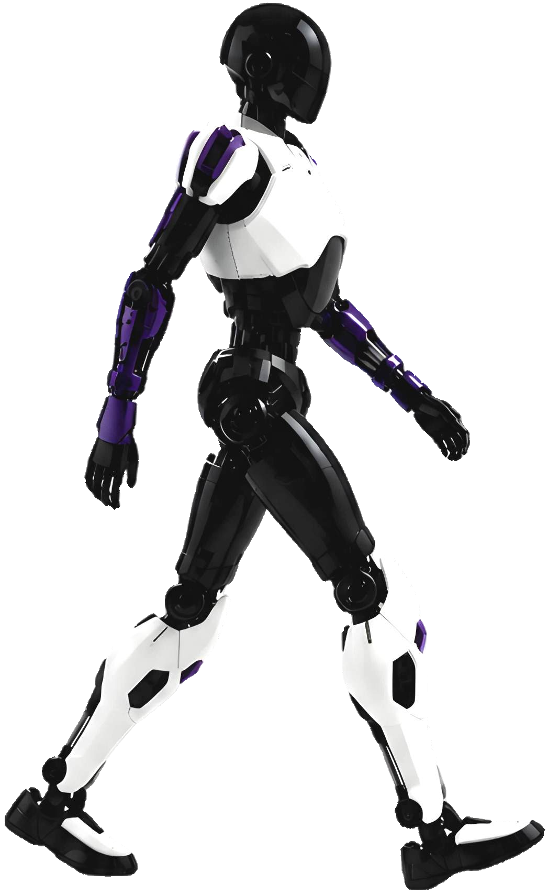

Humanoid-X
A humanoid robot from China.
Sources retrieved: 13 October 2026 (B) · 9 November 2026 (A)
- Intended use, per the manufacturer
- Not stated
- Indicative price
- Not stated

Product render from the manufacturer's World Robot Conference 2026 brochure (worldrobotconference.com). Background removed.
Specifications
5 of 33 stated 28 not stated
28 fields hidden
How to read the figuresShow guideClose
- not statedNo source
- noStated by a source
- 0Reported as zero
- ASource
- A*Source with a caveat (select it)
- CERecords only what the manufacturer states regarding CE marking.
Select a source marker for source details and notes.
Physical2/14 disclosed
Power1/5 disclosed
Sensing and autonomy2/6 disclosed
Payload and expansion0/3 disclosed
Commercial0/1 disclosed
Compliance & certifications0/4 disclosed
Against the field
Each strip holds every robot of this type in the guide that states the figure, one bar per group of values. Further right means a larger figure, not a better robot. A taller bar means more robots in that group.
Runtime
480minNote: load condition not stated
100 humanoids state a runtime
1 states a higher figure, 76 a lower one. 5 more state exactly the same figure. 17 state only a bound (≥ or ≤) and are not ranked.
Max speed
more than 5.4km/hmore than 3.36mphOur conversion from 1.5 m/s. The manufacturer does not state an imperial figure itself, so the conversion has no source of its own.
106 humanoids state a top speed
Humanoid-X states a lower limit, not one figure, so it is shown open-ended and not ranked against the others. 28 state only a bound (≥ or ≤) and are not ranked.
Notes
The WRC exhibitor page describes Humanoid-X as a full-size general-purpose biped humanoid robot (translated from the Chinese).
The exhibitor page says Humanoid-X carries the Wujie OS dual-brain embodied system (translated from the Chinese).
The exhibitor page says Humanoid-X is suited to commercial service, inspection and housework (translated from the Chinese).
The exhibitor page says the company is headquartered in Beijing and was founded in 2023 (translated from the Chinese).
Sources
One line per source, not per figure: a source has one retrieval date.
- Aworldrobotconference.com/profile/robot/download/2026/07/23/20260723175146000151_20260723175146A014.pdfSecondary. Retrieved 9 November 2026
- Bworldrobotconference.com/expo/company/787.htmlSecondary. Retrieved 13 October 2026